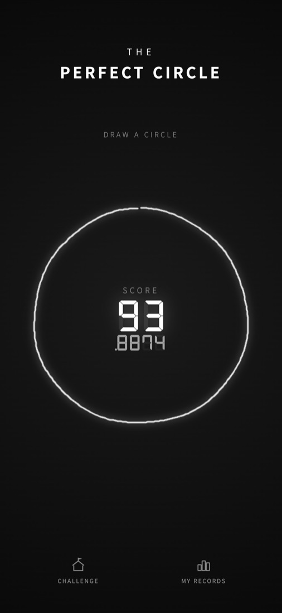
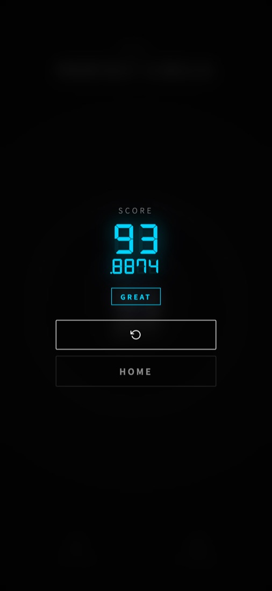
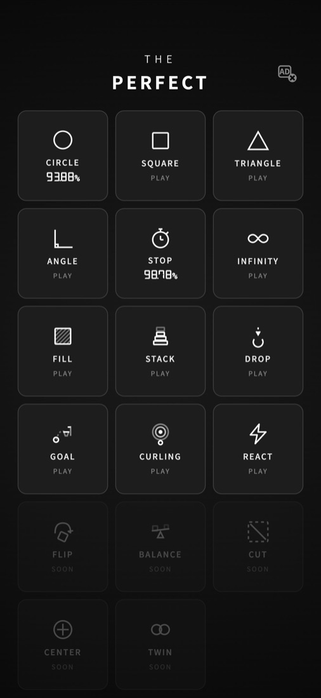
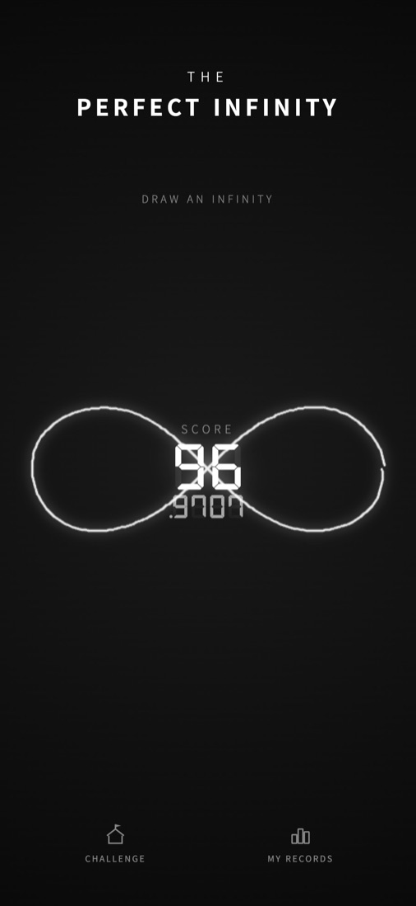
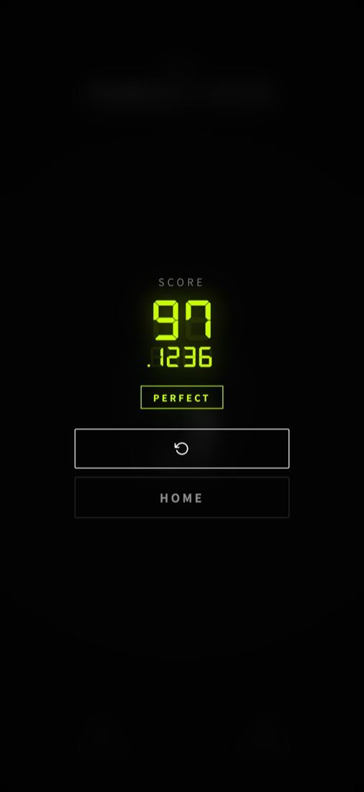

무료 게임 · 앱인토스 · 원스토어
완벽한 원,
한 번에 그릴 수 있나요?
손가락 한 번으로 원을 그리면 0.0001점 단위로 채점합니다. 쉬워 보이는데 95점이 좀처럼 안 나옵니다.


쉬워 보이죠?
규칙은 단순합니다. 화면에 손가락을 대고 원을 한 바퀴 그린 뒤 떼면 끝. 그런데 95점을 넘기기가 생각보다 어렵습니다. 한쪽이 살짝 찌그러지거나, 시작점과 끝점이 조금만 어긋나도 점수가 뚝 떨어집니다.
- 95점 이상 PERFECT
- 80점 이상 GREAT
- 60점 이상 NOT BAD
- 그 아래 KEEP TRYING
최고 점수는 99.9999점. 100점은 아무도 못 받습니다.
원 다음은 정사각형, 정삼각형, 직각
원이 익숙해지면 꼭짓점이 있는 도형에 도전하세요. 각도, 변의 길이, 선이 곧은지까지 모두 채점합니다. 원보다 어렵다는 사람이 더 많습니다.
그리기 말고도 12가지

- INFINITY — ∞ 기호를 한 번에 그리기
- STOP — 스톱워치를 정확한 순간에 멈추기
- FILL — 넘치지 않게 도형을 꽉 채우기
- STACK — 블록을 어긋나지 않게 쌓기
- DROP · GOAL · CURLING — 공과 스톤을 정확한 위치에 보내기
- REACT — 화면이 초록색으로 바뀌는 순간 누르기


💡 STOP 에서 PERFECT 받으려면?
목표 시간과 0.026초 안으로 맞춰야 합니다. 생각보다 훨씬 짧습니다.
💡 기록은 어디에 남나요?
게임마다 최고 점수가 홈 화면 카드에 표시됩니다. 친구와 점수를 비교해 보세요.
💡 돈 드나요?
아니요. 무료로 바로 할 수 있습니다.
한 번만 더 하면 PERFECT 가 나올 것 같은 게임입니다.